Overview
Buttons are an interface object which can be clicked by users in order to execute an action. If a submit button, the DynaForm is submitted, meaning that the form is closed and the data entered in the fields is stored in case variables and saved in the database. The case will then continue onto the next step in the current task or route to the next task if the last step. If a generic button, then custom JavaScript code can be added to the DynaForm, which will execute when the button is clicked.
Submit
A submit button in the DynaForm designer looks as follows:

While running a case or previewing a DynaForm, a submit button looks as follows:
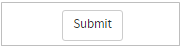
Submit Button Properties
The properties associated to this control are:
| Property | Description |
|---|---|
| Type | submit (readonly) |
| ID | Control unique identifier. Set by default as submit000000000X where "X" represents the corresponding numbering of the control in the design. This numbering starts in 1. Nevertheless, it is possible to set a new ID to work with the control using JavaScript. |
| Name | Control name. This property must begin with a letter. The name is used when sending data in a form submission. |
| Label | Label of the submit button which could be "Submit" |
 Button
Button
This control adds a button into the form. It is possible to add custom functionality to this control by including JavaScript code in the DynaForm (See the example below).
Button Properties
The properties of this control are:
| Property | Description |
|---|---|
| Type | button (readonly) |
| ID | Control unique identifier. Set by default as button000000000X where "X" represents the corresponding numbering of the control in the design. This numbering starts in 1. Nevertheless, it is possible to set a new ID to work with the control using JavaScript. |
| Name | Control name. This property must begin with a letter. The name is used when sending data in a form submission. |
| Label | Label of the button |
JavaScript in Buttons
To learn how to manipulate DynaForm controls using JavaScript, see JavaScript in DynaForms.
Generic buttons and submit buttons in ProcessMaker 3 have the following field components:
- Label: The text in the button.
- Value: The value is the same as the label.
- Text: The text is the same as the label.
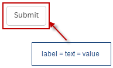
JavaScript Methods
Some of the JavaScript methods to manipulate generic buttons and submit buttons include:
| Method | Description |
|---|---|
jQuery("#fieldID").getValue() |
Returns the text of the button. |
jQuery("#fieldID").getText() |
getText() currently has a bug and does not work with button controls. |
jQuery("#fieldID").getLabel() |
Returns the text of the button. |
jQuery("#fieldID").setValue("newText") |
Sets the text of the button. |
jQuery("#fieldID").setText("newText")
|
Sets the text of the button. |
jQuery("#fieldID").setLabel("newText")
|
Sets the text of the button. |
To see code examples for these methods, see JavaScript Functions and Methods.
Note: Calling setText(), setLabel() or setValue() for a generic button or submit button will reset its properties and remove any custom properties set by JavaScript. After calling setText(), setLabel() or setValue(), these properties will need to be reset.
.find() method. For example:
Examples
Submit Button Example
For this example add a "submit" control by dragging and dropping it from the Web controls located on the left hand panel. The result of adding the control will look like the image below.

Click on any empty space of the control to display its properties on the left side panel. The properties are the ones shown in the image below.
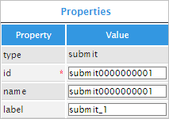
The "type" property is a readonly field which only shows the type of control it is.
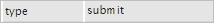
The "id" property can be used with JavaScript code. To do so, click on the light grey border of the DynaForm (which is the space outside the controls) to display the properties of the DynaForm. When the properties are displayed locate the "javascript" property and click on the "edit" button to open an editor.

On the javascript editor add code to set the label of the control, read this section for more information. Use one of the functions mentioned in the JavaScript section of this page. For this example, add the following code:
The code will look like the image below once in the editor.
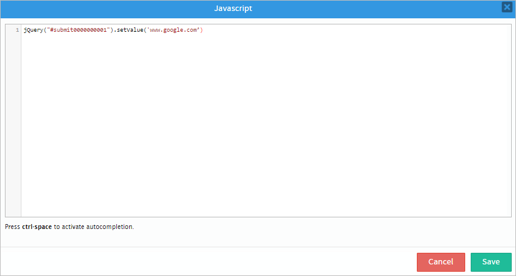
And the result of adding said code will change the value name of the "submit" control.
The following property is the "name" property which is the control name. This property must begin with a letter. The name is used when sending data in a form submission.
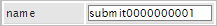
The "label" property will changed the label of the control. If JavaScript Code has been added and the value wants to be set manually. Erase the Javascript Code and change the label with a name such as "SUBMIT" as seen in the image below.
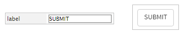
Available Version: 3.0.1.8
From version 3.0.1.8 a new quick screen when submitting a case will appear which doesn't allow users to click on the "Submit" button more than once instead of many times which could result in going a step forward into the process not completing some of steps. Now, the "Submit" button can only be clicked once therefore going into the following task as expected. The screen that will be shown when the "Submit" button is clicked would be the one shown in the image below therefore not allowing the user to click it more than once.

Button Control Example
For this example add a "button" control by dragging and dropping it from the Web Control to the Dynaform Designer. The result of this action is shown in the image below.
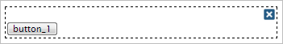
Click on any empty space on the control to display it's properties on the left hand panel.
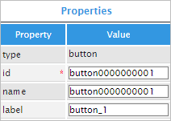
The first property which is the "type" property is a readonly one, displaying the type of control it is.
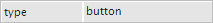
Now, for the "id" property, it can be used with JavaScript code. To do so click on the light grey border of the DynaForm (which is the space outside the controls) to display the properties of the Dynaform. When the properties are displayed locate the "javascript" property and click on the "edit" button to open an editor.
On the javascript editor add code to set the label of the control, read this section for more information. Use one of the functions mentioned in this section. For this example, add the following code:
The code will look like the image below once in the editor.
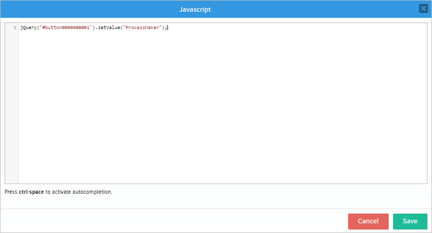
And the result of adding the code when the control is rendered will be the following:
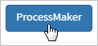
The "name" property must begin with a letter. The name is used when sending data in a form submission.
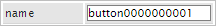
Finally, the "label" property is used to change the label of the control. For this example change it to "Button". Take into consideration that if JavaScript code has been added the "label" property won't have any effect so go back to the Javascript editor and erase the code and then this property will have effect.

Change Field Color
As an example of how to use the button control add a textbox and a button control in the design of the form. Then, change the ID of the controls to "text1" and "button123" respectively.

Now, add the following JavaScript in the JavaScript property of the form.
Then, try the functionality of the button by rendering it in the Preview option
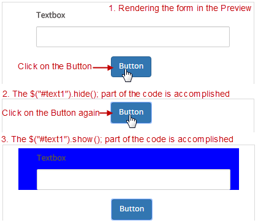
Check how to add JavaScript code to the form.
Cancel Case
A DynaForm can contain multiple submit buttons which have different purposes. This example shows how to create a DynaForm which has one button labeled "Submit" which continues the case and another a button labeled "Cancel Case", which cancels the current case. JavaScript code is used to assign a value to a hidden field when the "Cancel Case" submit button is clicked. Then, a trigger fired after the DynaForm checks for that value to determine whether to call Case::cancelCase().
First, create a DynaForm with a normal submit button and second submit button with the ID "cancelCase". Also, add a hidden field whose ID is "action" and is associated with the action variable.
Then, add the following the JavaScript code to assign the value "CANCELLED" to the "cancelCase" button if clicked:
$("#action").setValue("CANCEL");
});
$c = new Cases();
$c->cancelCase(@@APPLICATION, @%INDEX, @@USER_LOGGED);
//redirect back to the inbox:
echo '<script> top.location = "../cases/main" </script>';
die();
};
The above trigger checks whether the "CancelCase" button was clicked when the form was submitted. If so, then it cancels the case. Then, it redirects the web browser back to the Inbox. Notice that cases are run inside a frame, so Javascript is used to redirect the web browser to the topmost frame. The die() function is called to stop ProcessMaker and prevent the case from moving to the next step in the process.
Note: In versions 3.0 - 3.0.1.8, case variables were created for the submit buttons in a DynaForm when it was submitted. It was possible to assign a value to these submit buttons which could be examined in a subsequent trigger. Several examples on this page used to assign values to the submit buttons. In version 3.1 and later, however, case variables are no longer created for submit buttons, so these examples have been changed to assign a value to hidden fields, which can be examined in a subsequent trigger. If upgrading from 3.0.X to 3.1.X, make sure to change any custom code which depends on case variables created from submit buttons in DynaForms.
Redirection in Triggers
Warning: The following examples do NOT work in ProcessMaker Mobile version.
The previous example calls the form.saveForm() method to save the current data entered into the DynaForm, before redirecting to a new location. However, the saveForm() function does not save any files selected in a file control (and it also executes any triggers set to fire after the DynaForm). If needing to save files in the DynaForm, then it is recommended to use submit buttons instead of regular buttons. Also, add a hidden field to the DynaForm whose ID is "action" and is associated with a variable named "action". This hidden field will indicate which button was clicked to close the form.
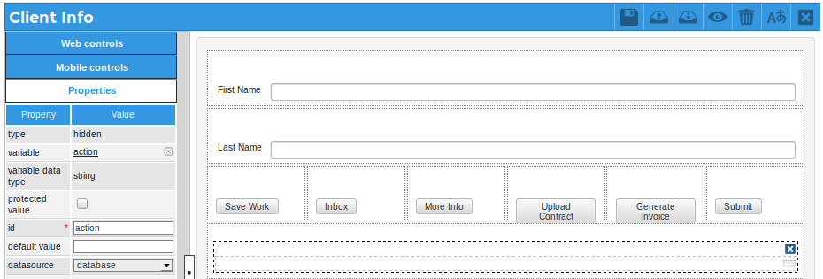
Then, create a trigger which uses PMFRedirectToStep() to redirect to a step (DynaForm, Input Document or Output Document) or uses the G::header() method to redirect to the Inbox or the end of the task for routing.
The following JavaScript code can be added to the DynaForm to indicate which submit button is clicked:
//save work and return to the same DynaForm
$("#action").setValue("SAVE_WORK");
});
$("#inbox").find("button").click(function() {
$("#action").setValue("INBOX");
});
$("#endTask").find("button").click(function() {
$("#action").setValue("END_TASK"); //goto routing at task's end
});
$("#moreInfo").find("button").click(function() {
$("#action").setValue("MORE_INFO"); //goto another DynaForm
});
$("#uploadContract").find("button").click(function() {
$("#action").setValue("UPLOAD_CONTRACT"); //goto Input Document
});
$("#generateInvoice").find("button").click(function() {
$("#action").setValue("GENERATE_INVOICE"); //goto Output Document
});
Then, create the following trigger to handle redirection of the web browser:
goto triggerEnd;
}
$action = @@action;
PMFSendVariables(@@APPLICATION, array('action' => '')); //reset action
if ($action == "INBOX") {
echo '<script> top.location = "../cases/main" </script>';
die(); //prevent next step
}
elseif ($action == "END_TASK") {
G::header("Location: cases_Step?TYPE=ASSIGN_TASK&UID=-1&POSITION=10000&ACTION=ASSIGN");
die(); //prevent next step
}
elseif ($action == "SAVE_WORK") {
//redirect back to the previous DynaForm to keep working on it:
PMFRedirectToStep(@@APPLICATION, @%INDEX, 'DYNAFORM', '60422430056a69386a2a885087313352');
}
elseif ($action == "MORE_INFO") {
PMFRedirectToStep(@@APPLICATION, @%INDEX, 'DYNAFORM', '140382730582d22af0d1c24018284816');
}
elseif ($action == "UPLOAD_CONTRACT") {
PMFRedirectToStep(@@APPLICATION, @%INDEX, 'INPUT_DOCUMENT', '77782079956a7de25a125c5065741006');
}
elseif ($action == "GENERATE_INVOICE") {
PMFRedirectToStep(@@APPLICATION, @%INDEX, 'OUTPUT_DOCUMENT', '13321001556d6125088d942072818002');
}
triggerEnd:
This trigger should be set to fire before the next step which follows the DynaForm (or before assignment if the last step in the task). Do NOT set this trigger to fire immediately after the DynaForm, because calling die() at that point will prevent the data in the DynaForm fields from being added to the wf_WORKSPACE.APPLICATION.APP_DATA field in the database and prevent any selected files from being saved in the server's file system.